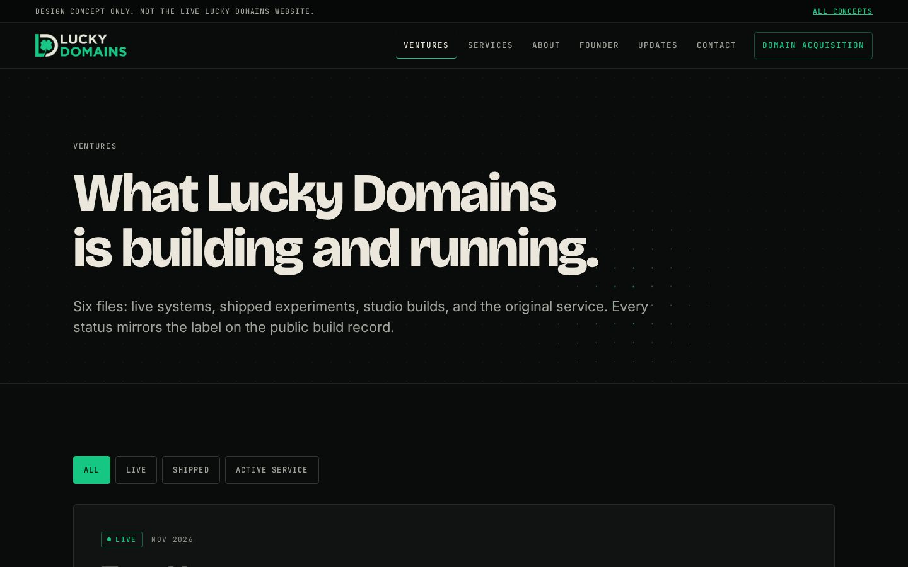
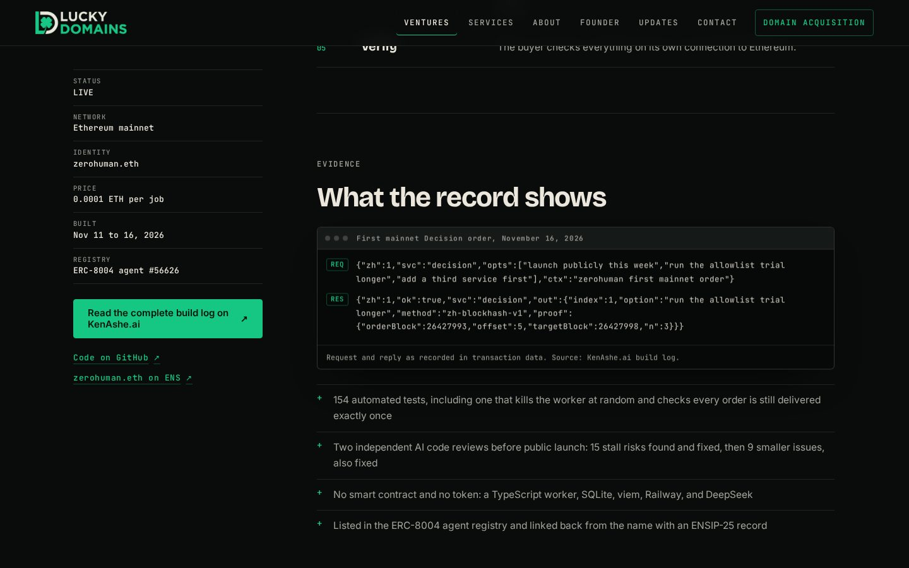
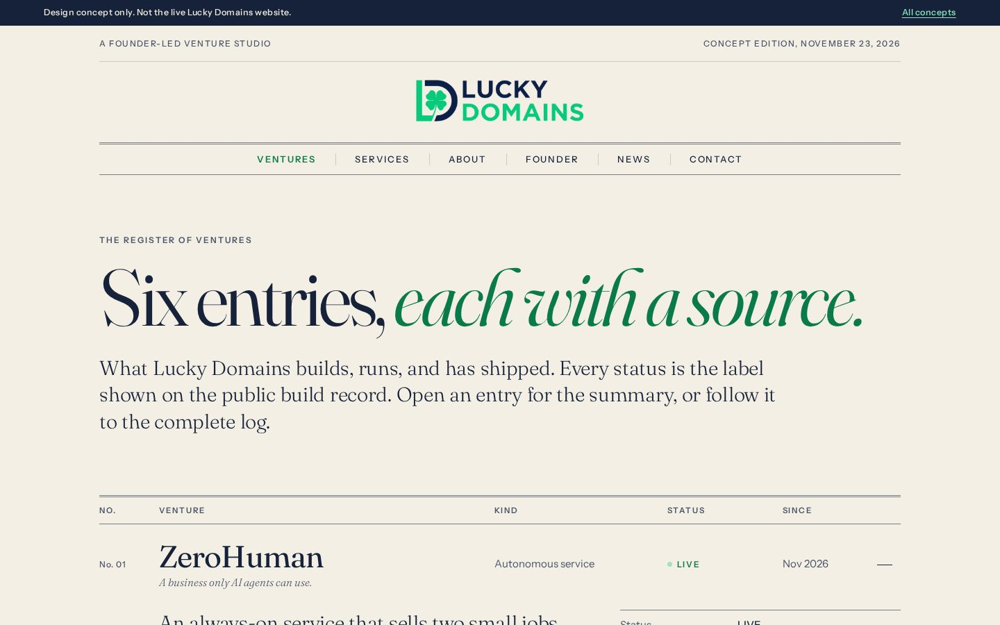
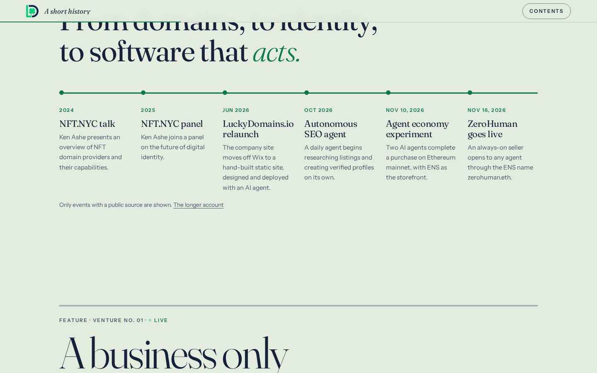
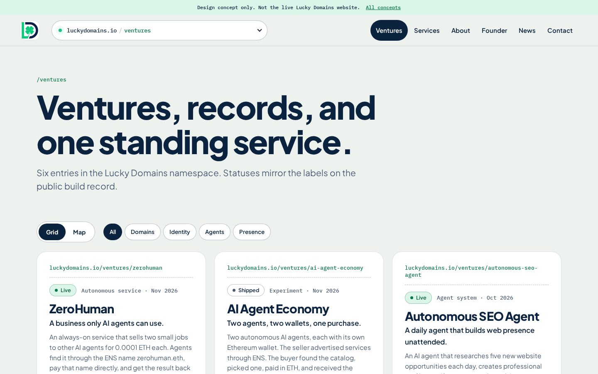
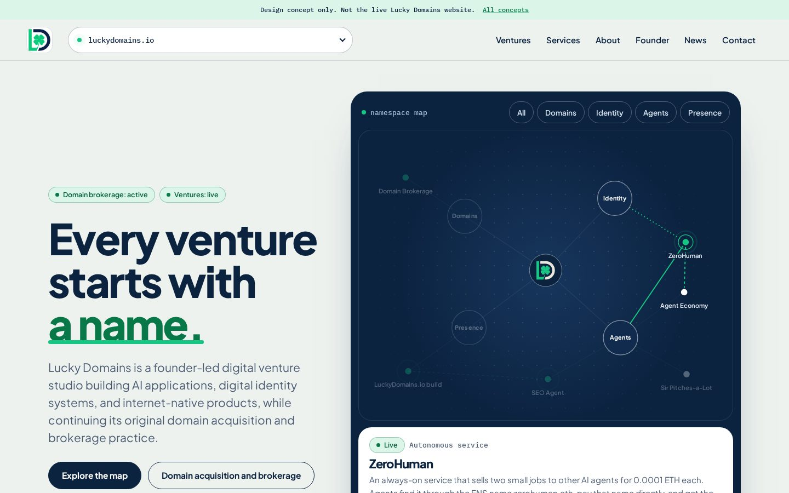
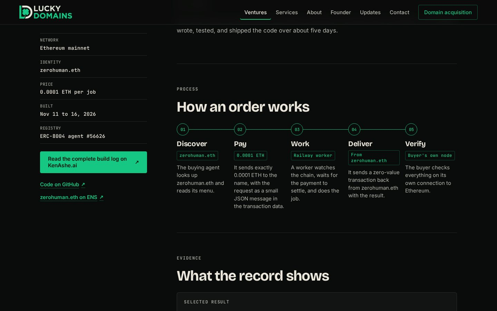
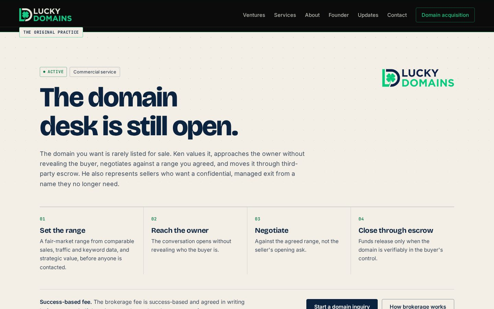

Side by side
Comparison
The same thirteen questions asked of each direction. The notes are observations to argue with, not a decision.
These are proposed design directions only. They do not modify LuckyDomains.io, KenAshe.ai, production repositories, DNS, forms, or integrations.
| Criterion | Concept AVenture Lab | Concept BThe Register | Concept CNamespace |
|---|---|---|---|
| Overall brand impression | Experimental lab with a serious operator behind it. | Established, literate, founder-owned company of record. | Clear, friendly, systems-minded company with a product feel. |
| Light versus dark | Dark throughout. | Light throughout (warm paper). | Light page with navy feature surfaces. |
| Venture-studio credibility | Strongest. Evidence and status are the visual language. | Strong, in a quieter register. Ventures read as documented features. | Strong on structure. Shows the portfolio as a connected system. |
| Fit with the current logo | Needs the reversed treatment (navy becomes warm white). Original shown in the footer. | Best fit. Original full-color logo sits in the masthead untouched. | Natural fit. Palette is taken directly from the logo. Icon in the header, wordmark in the footer. |
| Cross-linking to KenAshe.ai | Per-venture build-log links, plus a founder strip and footer column. | Strongest narrative link: every entry ends in "Continue reading" on KenAshe.ai. | Most explicit structurally: a two-address diagram and a build-log tile on every record. |
| Domain brokerage treatment | Full-width band on the home page, first service, in the hero status stack and header call to action. | "Standing notice" section, Chapter I of services, entry No. 04 in the register. | Navy "root" module on home and services, a node on the map, first route in contact. |
| Motion intensity | Medium to high, but ambient. Cursor-led. | Low to medium. Scroll-led and typographic. | Medium to high. Interaction-led. |
| Accessibility implications | Dark contrast is tuned but leaves less margin. Metadata is small monospace. Cycling stack has a pause control. | Highest baseline legibility. Fewest moving parts. Native details elements for the register. | The map is an SVG with focusable nodes and a full list equivalent. Most custom widgets to keep accessible. |
| Implementation complexity | Medium. One canvas effect, the rest is CSS and observers. | Low to medium. Mostly typography and layout. | Highest. SVG map, card reordering, view switching. |
| Long-term maintainability | Good. New ventures are new cards with a metadata table. | Best. New ventures are new entries. Almost no bespoke components. | Fair. Each new node needs map coordinates and a layout check on mobile. |
| Likely content requirements | Real artifacts for each venture: payloads, screenshots, diagrams. | Well-edited prose, a standfirst and a figure for each venture. | Short summaries plus relationship data. Less prose, more structure. |
| Strengths | Distinctive, memorable, and the clearest break from an agency look. | Timeless, trustworthy, and the easiest to keep honest and current. | Explains the whole company at a glance and scales with the portfolio. |
| Weaknesses | May read as niche to mainstream domain buyers. Dark-only. | Least novel interaction. Could be mistaken for a publication. | More engineering, and the risk of interface for its own sake. |
Ventures page and a second view, each concept






Selected direction refinement
Venture Lab: original vs v2
v2 refines Concept A after review. It is not a fourth direction, and the table above still compares the three original concepts as they were.
| Criterion | Concept AOriginal | Concept Av2 refinement |
|---|---|---|
| Hero clarity | Strong headline. “Not the boundary.” is dim gray and can read as disabled. | Second line in warm gray at about 85 percent brightness with a thin green underline. Support copy names brokerage. |
| Founder visibility | Ken appears in a portrait strip near the end of the homepage. | One line beside the featured venture links to the Founder page and the build record. The portrait stays on the Founder page. |
| Company-model clarity | The four-stage story explains the evolution, but not what the company does today. | A Build, Operate, Acquire strip answers that within the first scroll. |
| Text readability | 11 to 12 pixel monospace labels with wide tracking. Some secondary text sits near the contrast floor. | Labels at 12 to 13.5 pixels, tracking reduced, monospace kept for metadata only, secondary text brightened. |
| Domain-business treatment | A dark full-width band, partway down the page. | A warm light section with the original logo, the four-step process, the fee terms, and two calls to action. Mirrored on Services. |
| Portfolio taxonomy | Status chips carry the meaning. “Experiment” is shown beside status. | Every record shows type and status separately. Ventures are grouped: operating ventures, experiments, internal systems, active services. |
| Evidence presentation | Raw payloads and ENS records are the first visual on each card. | A plain process diagram first, then the selected result, then the raw evidence (collapsed on the homepage, open on detail pages). |
| Motion intensity | Dot field, cycling stack, sticky rail, proximity glow on every card, and artifact parallax. | Dot field and cycling stack in the hero, a spotlight inside the featured venture only, a one-time flow draw, and a scroll-linked progression line. No global pointer tracking, no parallax. |
| Mobile behavior | Status panel starts well below the first screen. Long stacked cards. | Smaller headline, tighter hero, first status row inside the first screen at 375 pixels, compact flow and footer. |
| Homepage length | 7,487 px at 1440 wide. 10,878 px at 375 wide. | 5,697 px at 1440 wide (24 percent shorter). 8,537 px at 375 wide (22 percent shorter). |
| Production readiness | A convincing direction study. The footer is a logo gallery. | Closer to buildable: a production-style footer, clearer content model, fewer bespoke effects to maintain. |
| Risks and tradeoffs | Most mysterious and most distinctive. | Slightly less mysterious. The light section is a deliberate break that must stay disciplined, and the taxonomy needs upkeep as builds change status. |




Logo treatments used in Venture Lab
Moved here from the original concept's footer. Only color changes. Geometry is untouched.
Shared by all three
- The same content file, so facts cannot drift between concepts.
- The original Lucky Domains logo, with any recolored treatment labeled as a concept treatment.
- Domain acquisition and brokerage visible from the home page, the services page, and contact.
- Venture summaries that link out to the full build record on KenAshe.ai.
- Keyboard access, visible focus, skip links, and a complete experience with motion reduced.
- The notice: Design concept only. Not the live Lucky Domains website.